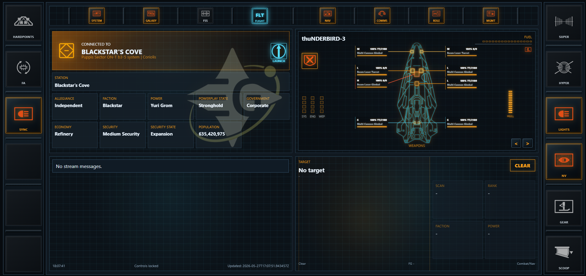
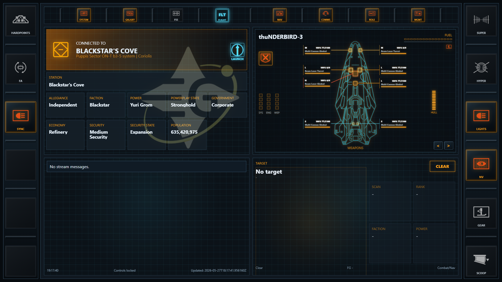
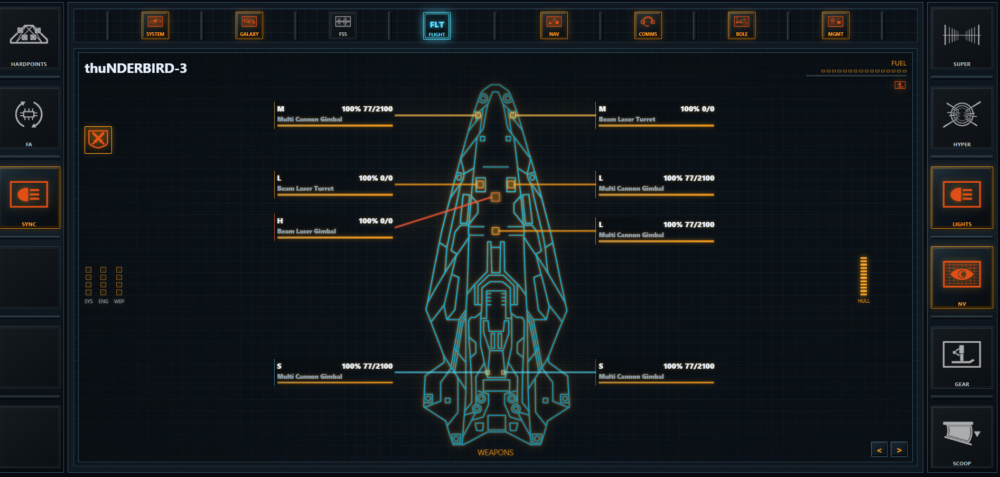
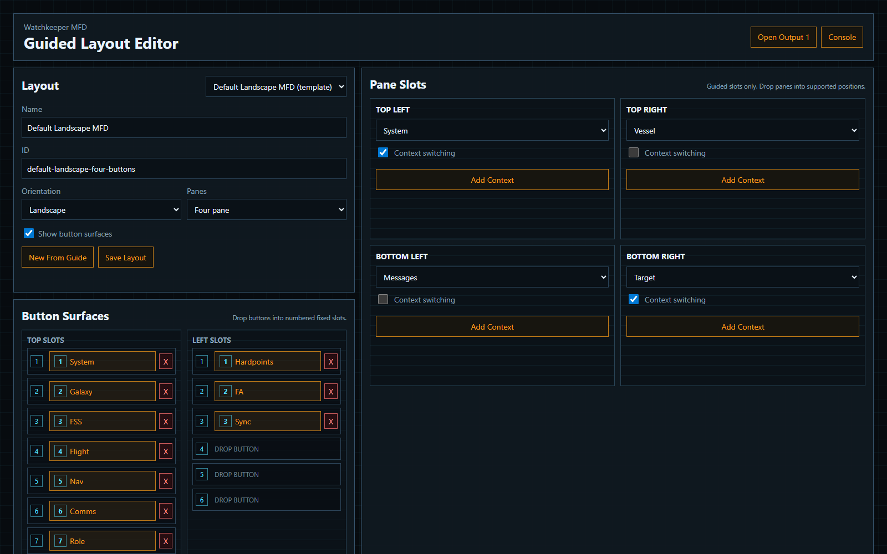
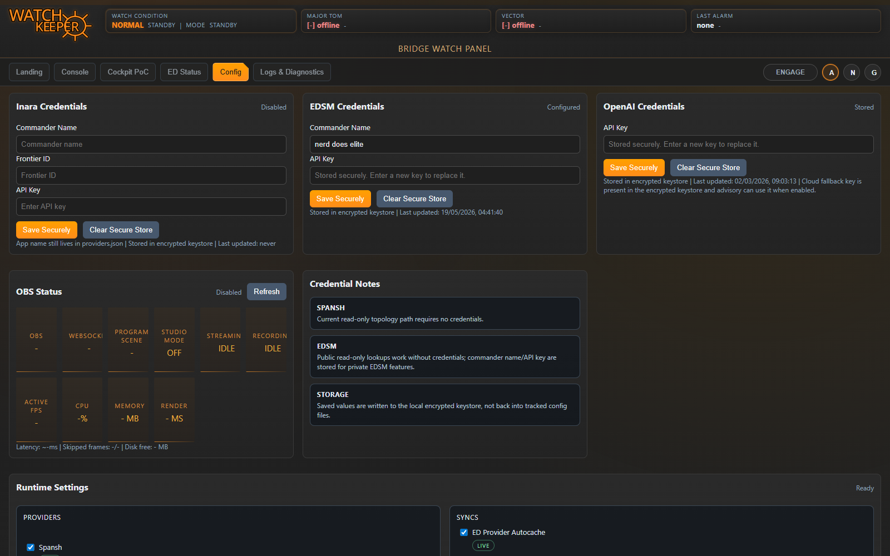

Ship telemetry. Tactical displays. Command-deck immersion.
WATCHKEEPER vNEXT
Turn Elite Dangerous into a live command environment.
Watchkeeper reads the pulse of your ship and projects it onto cockpit-grade MFDs, touch panels, bridge displays and mission-control screens. Jump, dock, fight, scan, mine, deploy, land: the interface reconfigures around the moment like a proper shipboard computer.

The game gives you telemetry. Watchkeeper turns it into command presence.
This is not an autopilot and it is not a spreadsheet bolted to the canopy. It is an operations layer: a reactive bridge console that watches the same flight state you do, surfaces the signal, and makes your ship feel like it has a crewed nerve center.
Primary mission surface
MFDs that move with the fight, the jump, and the docking request.
Vessel schematics, system context, target intelligence, station headers, landing workflows and route data live in one coherent cockpit shell. Fly in supercruise, drop from hyperspace, request docking, launch an SLF or go on foot: the pane stack follows the phase of flight.


In-game first
The second screen stops being a second screen.
Watchkeeper is built for commanders who want the cockpit to answer back. Put it on a tablet, side monitor, browser source, stream deck station or full bridge panel and it behaves like an onboard tactical system, not another pile of windows.

Guided, not freehand
Build a bridge layout without breaking the bridge.
Pick landscape or portrait. Choose four-pane command mode or a single dedicated panel. Show or hide button rails. Drag reusable buttons from the bank into numbered slots, create custom controls, then assign each output to its own display.
Bridge calibration
Settings for the ship, the commander and the wider ops net.
Credentials, providers, runtime toggles and advisory systems live in the same control stack. Tune the bridge once, then let the MFDs and external channels pull from the same command memory.

Streaming and third-party systems stay in support, where they belong.
Twitch, OBS, SAMMI, lighting sync, music detection and external APIs are auxiliary channels. Useful. Powerful. But the command deck is the star. The game state drives the bridge; streaming gear and companion apps amplify it.
Built for commanders who want the ship to feel alive.
No magic. No cheat layer. No fake automation fantasy. Watchkeeper is the bridge computer Elite Dangerous keeps hinting at: telemetry in, context out, command surfaces lit and ready. Your ship already knows what is happening. Watchkeeper makes it visible.
Response
-
Policy Preview
Quick SitRep
ED Providers
Twitch Chat (Live)
Twitch Events (Latest 3)
Cockpit PoC
Loading...Feature Toggles
Safety
Ship Status
Current System
Current Station
Semantic Debug
Waiting for semantic state...